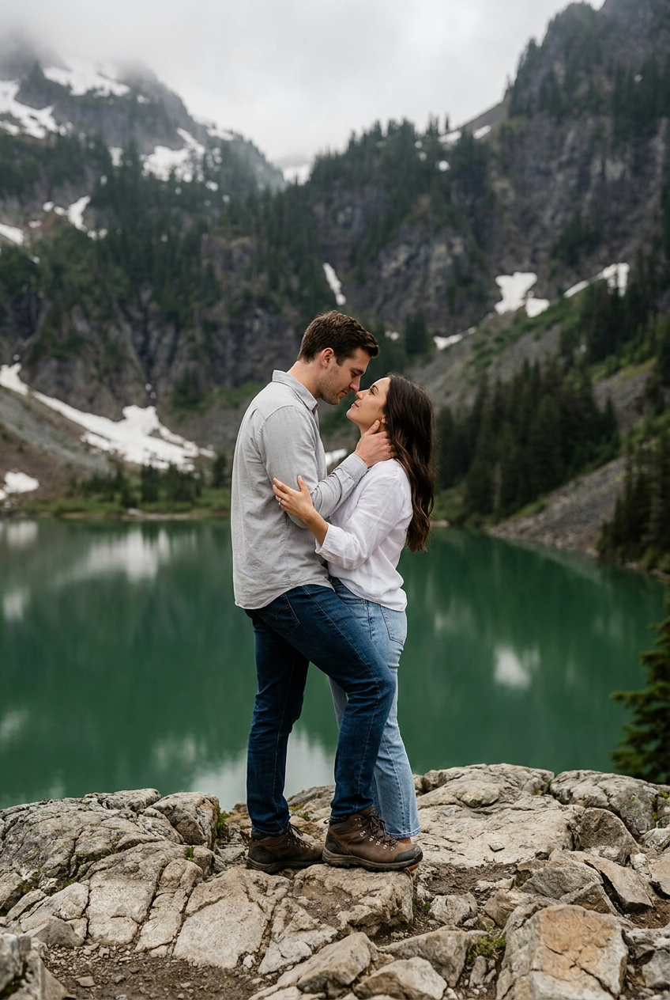
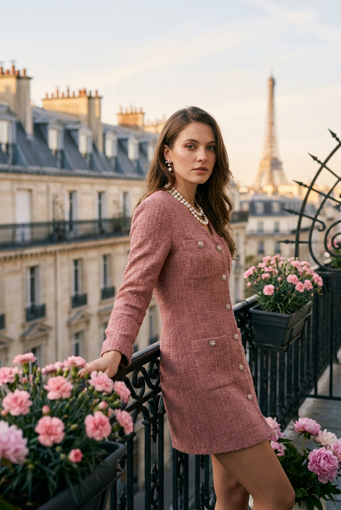
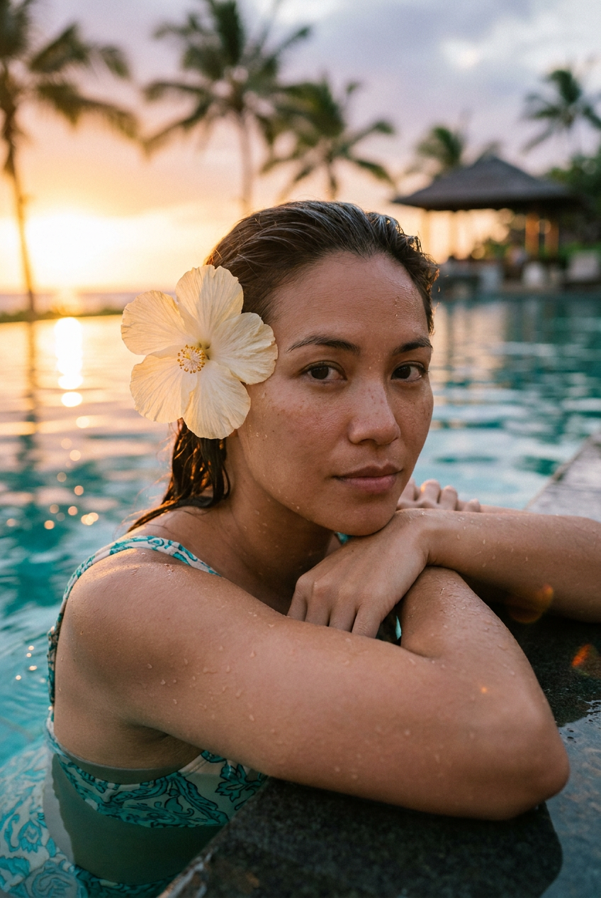
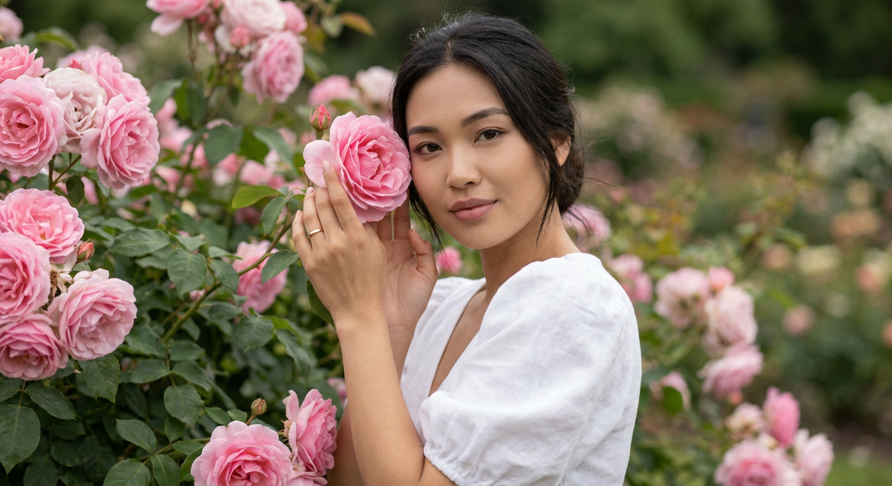
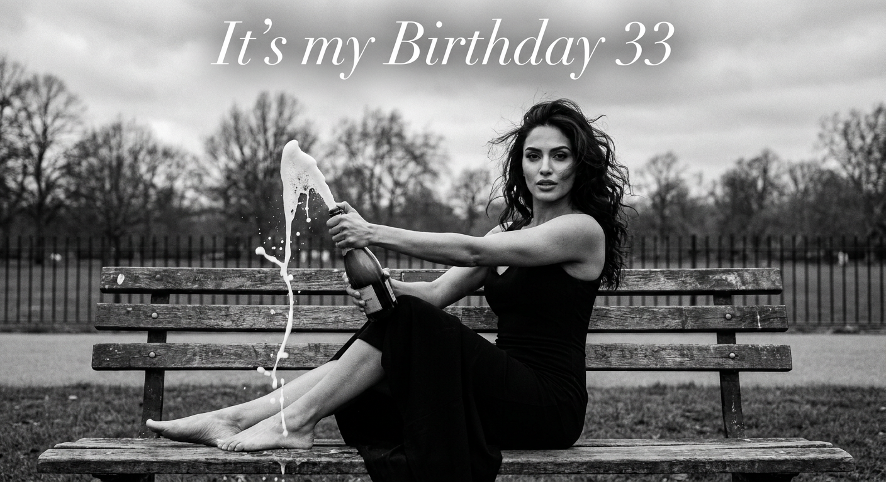
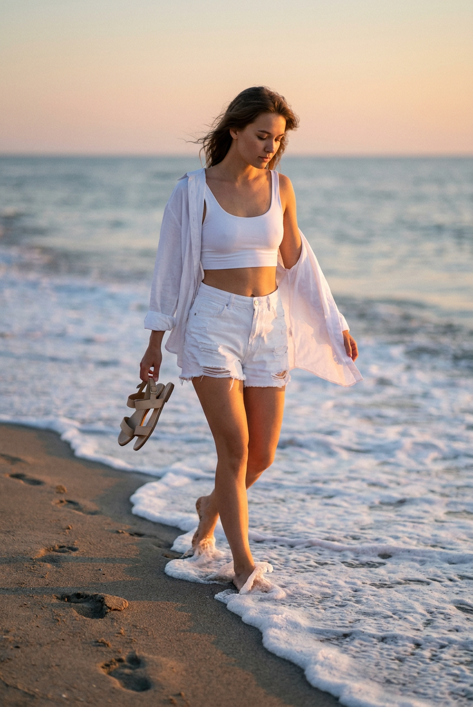
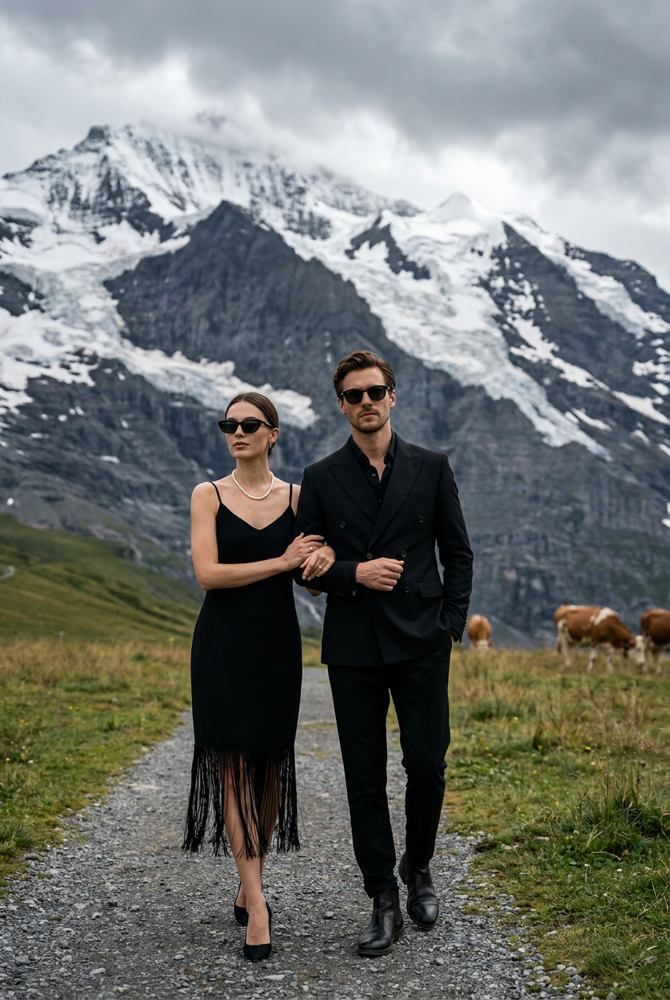
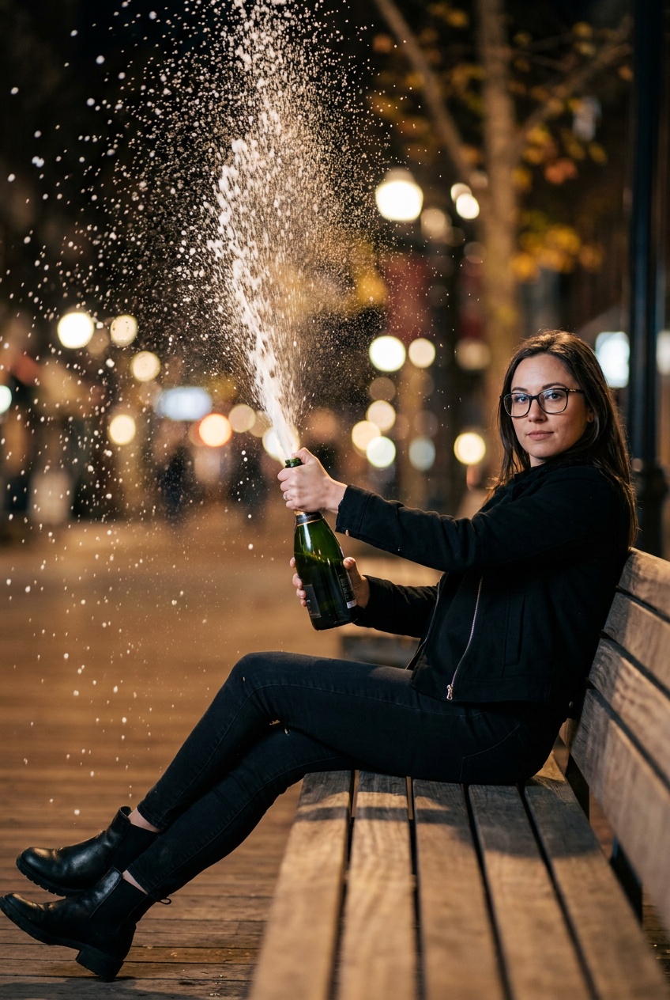
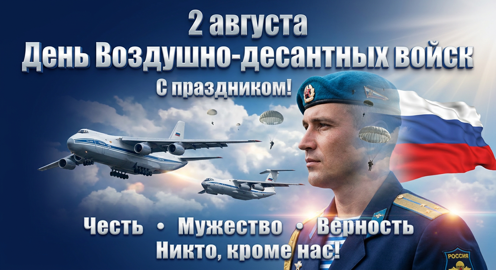
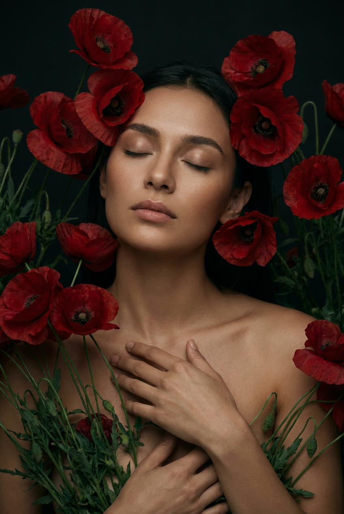

Трендовые ИИ-фото: 10 промптов для нейросети

Обычный снимок не всегда передаёт настроение, образ или место, о котором вы мечтаете. Генерация помогает превратить портрет в кинематографичный кадр — даже если под рукой нет гор, моря, Парижа или профессиональной фотостудии.
В подборке — 10 сценариев для трендовых ИИ-фото: романтика в Альпах, утро на балконе, закат у бассейна, чёрно-белая birthday-съёмка, маки, розы, шампанское и парадный образ десантника. В каждый промпт заложены поза, свет, фактура и композиция.
Как сгенерировать такое фото: пошагово
Нужен снимок анфас при ровном свете, лицо в кадре целиком, без тёмных очков и головных уборов. Разрешение от 1000 пикселей по короткой стороне. Чем чётче исходник, тем точнее модель повторит черты.
Выберите сценарий ниже и нажмите «Копировать» — текст уйдёт в буфер целиком, вместе с командой сохранения внешности. Эта команда стоит первой строкой и отвечает за то, чтобы на выходе было ваше лицо, а не случайное.
Кнопка «Сгенерировать» рядом с каждым промптом открывает модель в новой вкладке. Nano Banana Pro работает с референсом лица — в отличие от моделей, которые генерируют портрет с нуля и узнаваемость теряют.
Промпт — в поле ввода, портрет — через загрузку референса. Порядок значения не имеет, но без референса команда сохранения внешности работать не будет: модели нечего сохранять.
Для сторис и ленты берите 9:16, для превью и обложек — 4:3. Первый результат редко идеален: если поза или свет ушли не туда, поправьте соответствующую часть промпта и запустите заново. Обычно хватает двух-трёх итераций.
10 промптов для генерации
1. Свадьба у горного озера
Строго сохранить внешность по загруженному референсу: черты лица, пропорции, мимику и текстуру кожи без изменений. Фотореалистичный вертикальный кадр в кинематографичном стиле: романтическая свадебная или travel-съёмка пары на фоне гор. Внизу кадра — крупная каменистая площадка из светло-серых и бурых шероховатых валунов. В нижней трети стоят мужчина и женщина: он немного левее и позади, слегка склоняется к ней, она развёрнута к его груди. Пара тесно обнимается: руки женщины лежат на плечах или шее мужчины, его руки поддерживают её за спину и талию. Позади — спокойное горное озеро с мягкими отражениями, затем крутые склоны и скалистые вершины с отдельными пятнами снега. Свет естественный, чистый, с мягкой атмосферной дымкой и реалистичной передачей камня, воды, одежды и кожи. Лица обоих должны выглядеть узнаваемо и естественно, без пластиковой ретуши, лишних пальцев и деформаций.
2. Парижское утро на балконе

Строго сохранить внешность по загруженному референсу: черты лица, пропорции, мимику и текстуру кожи без изменений. Вертикальная fashion/lifestyle-фотография ранним утром на французском балконе в стиле Haussmann. Вдали видны классические парижские фасады, мансардные окна, тёплое небо и Эйфелева башня в лёгком расфокусе. Девушка стоит расслабленно, смотрит прямо в объектив или немного в сторону; выражение спокойное и уверенное. На ней короткое платье пыльно-розового оттенка выше колена, с длинными рукавами и фактурой твида или ткани в духе Chanel. Добавь маленькие пуговицы и деликатную фурнитуру, мягкий сатиновый блеск и хорошо различимую тканевую фактуру. Внешность натуральная: ухоженная кожа, лёгкий макияж, выразительные глаза, живая мимика. Освещение мягкое, дневное, без жёстких теней; настроение — романтичная городская съёмка для fashion-журнала. Сохрани реалистичные пропорции тела, рук и лица, фон сделай слегка размытым.
3. Закат у бирюзового бассейна

Строго сохранить внешность по загруженному референсу: черты лица, пропорции, мимику и текстуру кожи без изменений. Крупный вертикальный портрет девушки у края открытого бассейна на тропическом курорте. Солнце почти у горизонта, весь кадр наполнен мягким золотым светом. Вода насыщенного бирюзово-голубого цвета, на поверхности заметны лёгкие блики и отражение закатного неба. На заднем плане — размытые пальмы и крупные зелёные листья, бело-бежевые шторы, ширма или павильон, а вдали тонкая дымка. Девушка смотрит в камеру, её выражение мягкое, спокойное, чуть задумчивое. Кожа ухоженная, с реалистичными солнечными бликами и небольшими следами влаги, без эффекта пластика. Макияж естественный, губы покрыты матовой или сатиновой нюдовой помадой. Волосы и детали образа выглядят натурально, без чрезмерной укладки. Передай атмосферу тихого resort vacation, тёплую цветокоррекцию, малую глубину резкости и живую текстуру кожи.
4. Портрет среди роз

Строго сохранить внешность по загруженному референсу: черты лица, пропорции, мимику и текстуру кожи без изменений. Фотореалистичный женский портрет в цветущем саду. Девушка стоит вплотную к пышному кусту розовых роз и слегка прижимается к цветам. Одной рукой она касается ветки с крупным распустившимся цветком, другая поддерживает позу возле лица; пальцы тонкие, расслабленные, на руке видно изящное кольцо. Голова чуть наклонена в сторону, лицо развёрнуто к камере. Взгляд нежный и спокойный, эмоция мечтательная, без широкой улыбки, губы слегка приоткрыты. На девушке лёгкое белое платье из натуральной ткани с мягкой посадкой и объёмными короткими рукавами-фонариками. Цвет платья чистый белый, без лишнего декора. Цветы окружают модель, часть лепестков находится близко к объективу и красиво размыта. Используй мягкий рассеянный свет, естественную кожу с видимой текстурой, натуральные пропорции кистей и лица, деликатную романтичную цветокоррекцию.
5. Birthday-съёмка с шампанским

Строго сохранить внешность по загруженному референсу: черты лица, пропорции, мимику и текстуру кожи без изменений. Чёрно-белая фотореалистичная birthday editorial-фотография в стиле fashion-журнала. Девушка сидит на парковой скамейке в элегантном чёрном платье и держит бутылку шампанского. Из бутылки резко вырывается высокий фонтан пены, белые брызги разлетаются вверх и в стороны, момент зафиксирован очень чётко. У модели тёмные волнистые волосы, уверенная поза и босые ноги. На заднем плане — парк, ограда, деревья и пасмурное небо, фон мягко размыть. В верхней части изображения размести белую курсивную надпись It’s my Birthday 33. Высокий контраст монохрома, резкое лицо, мягкое боке, натуральная кожа, заметное, но аккуратное плёночное зерно. Съёмка как на Canon EOS R5: объектив 50 мм, f/2.0, 1/2000 с, ISO 200. Не допускать искажений рук, бутылки и текста.
6. Тихий закат на берегу

Строго сохранить внешность по загруженному референсу: черты лица, пропорции, мимику и текстуру кожи без изменений. Вертикальная lifestyle-съёмка на песчаном морском берегу во время заката. Спокойные мягкие волны подходят к линии пляжа, белая пена смешивается с лёгкими серо-голубыми оттенками. На переднем плане — влажный песок, следы от воды и небольшие волновые гребни; горизонт ровный, дальняя линия неба слегка размыта. Девушка стоит у прибоя, её волосы слегка шевелит ветер. Она смотрит вниз, в сторону песка, выражение лица тихое и сосредоточенное. Солнце низко над горизонтом, небо переходит от персиково-оранжевого у воды к мягкому розовому и бледно-голубому выше. Используй тёплый golden hour, длинные мягкие тени и тонкий контровой свет по контуру волос и плеч. Сохрани натуральное лицо, живую текстуру кожи и ненавязчивую атмосферу отпуска. Кадр должен выглядеть как настоящая фотография, без чрезмерной ретуши.
7. Пара на альпийской тропе

Строго сохранить внешность по загруженному референсу: черты лица, пропорции, мимику и текстуру кожи без изменений. Фотореалистичная вертикальная фотография пары на альпийском лугу в Швейцарии или Австрии. День пасмурный, над пейзажем лежат плотные облака и прохладная влажная дымка. Вдали поднимаются заснеженные вершины с ледниками и тёмные скалистые склоны. Передний и средний план занимают зелёные луга с травой разной высоты, через них по диагонали проходит грунтовая или гравийная тропинка. Женщина стройная, с естественным выражением лица, в чёрных солнцезащитных очках элегантной формы; на шее крупное жемчужное или металлическое колье до ключиц, на запястьях могут быть тонкие браслеты. Рядом стоит мужчина с натуральными чертами лица. Одежда пары выглядит подходящей для прохладного горного путешествия, без кричащих логотипов. Передай влажный воздух, мягкий рассеянный свет, реалистичную глубину пространства и прохладный контраст тумана с зеленью.
8. Ночной street-style с пеной

Строго сохранить внешность по загруженному референсу: черты лица, пропорции, мимику и текстуру кожи без изменений. Трендовая фотореалистичная street/lifestyle-фотография ночью, вертикальная ориентация. Женщина сидит или полу-лежит на деревянной скамье, одна нога согнута и вынесена вперёд, вторая уверенно стоит на земле. На ней лаконичный чёрный образ: тёмная куртка, пиджак или бомбер, чёрные джинсы и чёрные ботинки. На лице очки в тёмной оправе, взгляд направлен прямо в объектив, выражение спокойное и уверенное. В руках — бутылка игристого тёмно-зелёного стекла. В момент съёмки она открывается: из горлышка вверх-влево вылетает высокая струя белой пены, похожая на водопад, вокруг много мелких капель и частиц. Ночной фон с городскими огнями мягко размыть, деревянную фактуру скамьи сохранить. Используй контрастный направленный свет, холодные оттенки улицы и яркие блики на пене, реалистичную кожу и точную анатомию кистей.
9. Парадный образ десантника

Строго сохранить внешность по загруженному референсу: черты лица, пропорции, мимику и текстуру кожи без изменений. Создай фотореалистичный патриотический портрет человека в торжественной парадной форме российского военнослужащего Воздушно-десантных войск. На голове голубой берет с кокардой, поза прямая, уверенная и мужественная, выражение передаёт достоинство, силу духа и готовность к подвигу. Используй композицию двойной экспозиции: профиль и силуэт десантника плавно соединяются с тяжёлыми военно-транспортными самолётами Ан-124 и Ил-76 в небе, группой десантников, прыгающих с раскрытыми парашютами среди облаков, и атмосферными небесными слоями. Сохрани узнаваемые черты лица, естественный возраст, пропорции головы и реалистичную текстуру кожи. Форма должна выглядеть детально: ткань, воротник, знаки различия и берет без случайных символов. Цветовая гамма — глубокие синие и серо-голубые тона, драматичный свет, объёмные облака, чёткий портретный силуэт и аккуратное совмещение всех элементов без визуального шума.
10. Девушка в поле маков

Строго сохранить внешность по загруженному референсу: черты лица, пропорции, мимику и текстуру кожи без изменений. Фотореалистичная вертикальная fashion-портретная фотография в поле красных маков. Кадр плотный: цветы и тонкие стебли окружают модель со всех сторон, особенно возле головы, плеч и рук, создавая ощущение, будто она почти утонула в маках. Девушка расположена среди цветов, корпус слегка подан вперёд и развёрнут в три четверти, голова немного наклонена. Настроение интимное, мягкое, мечтательное и чуть драматичное; палитра строится на глубоких красных, тёмно-зелёных оттенках и тёплом цвете натуральной кожи. Лицо живое и узнаваемое, с сохранением формы глаз, носа, губ, скул и подбородка, без омоложения, чрезмерной красоты, пластиковой ретуши или AI-артефактов. Лепестки на переднем плане можно слегка размыть, часть стеблей оставить резкой. Используй мягкий направленный свет, естественные тени, реалистичную фактуру кожи и цветов, умеренную глубину резкости и кинематографичную цветокоррекцию.
Что важно учесть в этом стиле
Трендовые ИИ-фото держатся не только на красивой локации. В промпте нужно заранее задать крупность плана, положение тела, направление взгляда, источник света и детали фона. Иначе нейросеть может заменить портрет общей внешностью, потерять кисти или сделать пейзаж слишком декоративным.
Для фото с референсом лучше описывать лицо спокойно и конкретно: естественная текстура кожи, узнаваемые пропорции, живая мимика, отсутствие пластиковой ретуши. Если генератор поддерживает силу влияния изображения, начните со значения около 65–80%, а затем сделайте несколько вариантов с более слабой привязкой для образов, где важнее новая одежда и поза.
Идеи для вариаций
- Замените горное озеро в свадебной сцене на ледниковую долину или побережье с чёрным песком.
- Для парижского образа попробуйте терракотовое платье, длинный тренч или вечерний костюм.
- В сцене у бассейна добавьте мокрые пряди волос, бокал с цитрусовым напитком или лёгкий тропический дождь.
- Розовый сад можно превратить в оранжерею с белыми пионами, сиренью или виноградными лозами.
- В birthday-съёмке замените шампанское на конфетти, свечи или серебристые воздушные шары.
- Для морского кадра задайте туманное утро, штормовой берег или лунную дорожку на воде.
- Альпийскую тропу легко перенести в хвойный лес, к деревянному шале или на заснеженный перевал.
- Ночной street-style заиграет иначе с неоном, мокрым асфальтом и отражениями витрин.
Как собрать свой промпт
Начните с формата и жанра: вертикальный портрет, editorial, lifestyle или кинематографичная фотография. Затем задайте место, время суток и погоду. После этого опишите модель: одежду, позу, жесты, взгляд и эмоцию. В конце добавьте свет, объектив, глубину резкости, фактуры и список нежелательных дефектов.
Один промпт лучше проверять серией из 4–8 генераций, меняя только один параметр за раз. Сначала добейтесь правильной композиции, затем уточняйте лицо, ткань и фон. Для портретов обычно подходят 50 или 85 мм, f/1.8–2.8; для сцены с человеком и пейзажем — 35 или 50 мм, f/2.8–5.6. Технические параметры помогают задать характер кадра, но не заменяют описание света и позы.
Ошибки, из-за которых кадр не получается
- Слишком много задач в одной фразе. Разделяйте сцену, персонажа, свет и технические параметры на отдельные смысловые блоки.
- Неуточнённая поза. Описывайте, где находятся руки, ноги, плечи и направление корпуса, особенно в сценах с объятиями и бутылками.
- Слабая работа с референсом. Добавляйте узнаваемые черты и натуральную мимику, но не повторяйте одно и то же требование в каждом предложении.
- Случайный текст на изображении. Надписи лучше делать короткими, в кавычках или добавлять отдельным редактором после генерации.
- Нереалистичный свет. Связывайте его с источником: закатное солнце, окно, неон, пасмурное небо или контровой луч.
- Игнорирование анатомии. Для сложных жестов, пены и тонких пальцев закладывайте несколько попыток и выбирайте самый чистый результат.
Частые вопросы
Как сделать такое ИИ-фото бесплатно?
Попробовать можно в Kandinsky и Шедевруме: они подходят для сцен по текстовому описанию, но точность сохранения лица и работа с референсом могут быть ограничены. В Krea AI и Arena.ai доступны разные режимы генерации и сравнения результатов, однако набор функций меняется, а часть возможностей может требовать регистрации или иметь лимиты. Бесплатный вариант почти всегда означает меньше попыток, очереди и более слабый контроль лица. Для сложных портретов лучше заранее подготовить качественный референс, где лицо хорошо освещено и не закрыто волосами или очками.
Как сохранить лицо с загруженной фотографии?
Используйте снимок анфас или в лёгком повороте, без фильтров и сильных теней. В промпте укажите, что нужно сохранить форму глаз, носа, губ, овал лица, возраст и естественную текстуру кожи. Если генератор позволяет менять силу референса, начните со среднего значения и сделайте 4–6 вариантов: слишком высокая привязка часто ломает позу и одежду, а слишком низкая — узнаваемость.
Какой формат выбрать для таких промптов?
Для подборки подойдут вертикальные пропорции 4:5 или 9:16. Формат 4:5 удобнее для портретов, цветочных сцен и публикаций в ленте, а 9:16 — для сторис и кадров с высоким фонтаном пены, горами или архитектурой. Если сервис позволяет, генерируйте сразу в разрешении от 1024 пикселей по короткой стороне, а увеличение делайте после выбора удачного кадра.
Почему нейросеть искажает руки, текст и бутылку?
Это сложные элементы с мелкими деталями и пересекающимися объектами. Упростите позу, отдельно опишите положение каждой руки, укажите материал бутылки и направление струи. Текст лучше сделать коротким и проверить вручную после генерации. Для сцены с пеной или брызгами полезно создать 6–8 вариантов, а затем исправить кисти и надпись в редакторе.